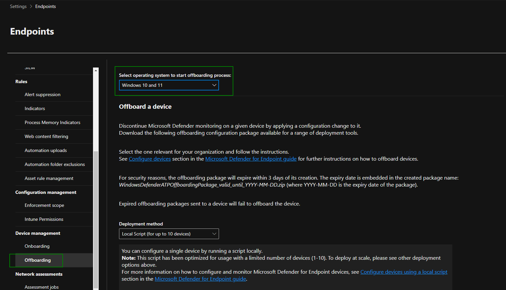
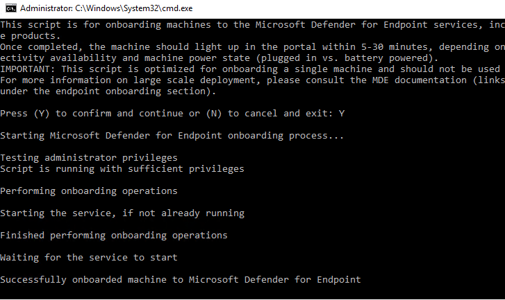
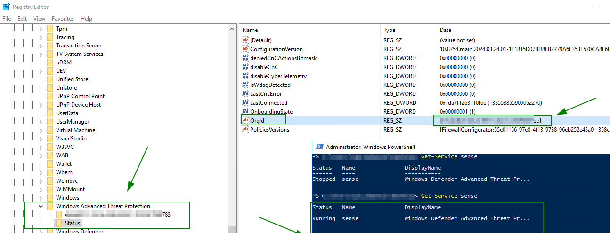
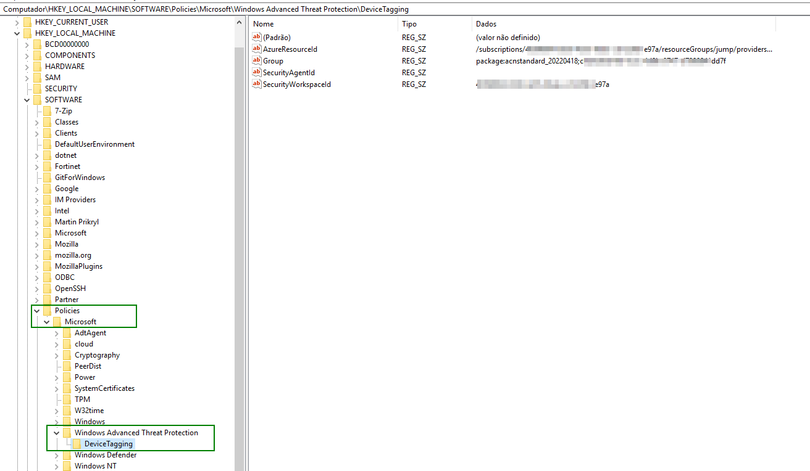
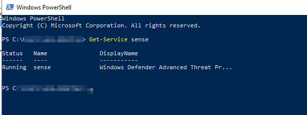

Instructions to onboarding Windows Server to MDE
1. Make sure following pre-requisites are met from target server:
Check if there is an MDE service active and installed. Run the command via PowerShell: "get-service sense"
Check if there are previous versions of the MDE linked to a TENANT ID from another organization. See if there are any registry entries in HKEY_LOCAL_MACHINE\Software\Policies\Microsoft\Windows Advanced Threat Protection" If there is, go to step 3
Make Download Script Offboarding (if necessary)
Make Download Script Onboarding
Both scripts must be run as administrator
2. Prepare following 1 file for offboarding and copy them to target server
Make Download Script Offboarding and execute to target server

3. Run Script Onboarding on target server to install Microsoft Defender
.

4. Validating the installation on Windows and checking the registry entry.
Use the following registry key to verified key its correct ID Org final "ee1" in"HKEY_LOCAL_MACHINE\Software\Policies\Microsoft\Windows Advanced Threat Protection"

Check device tagging in "HKEY_LOCAL_MACHINE\SOFTWARE\Policies\Microsoft\Windows Advanced Threat Protection\DeviceTagging"

Check if there is an MDE status service is active Run the command via PowerShell: "get-service sense"
